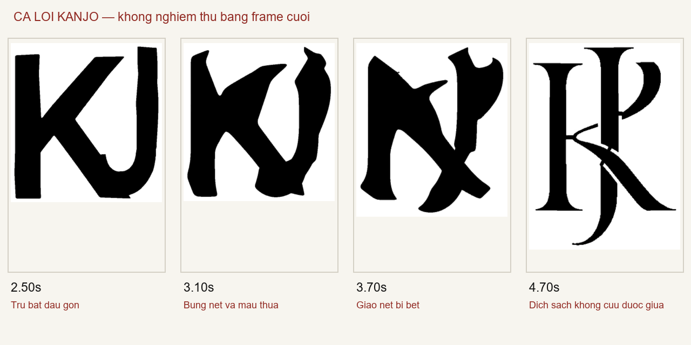

Học nhịp/cơ chế từ mẫu, dùng artwork của logo mới để quyết định hình dáng. Video giáo dục ở phía trên có thể render lại từ source, không phải dựng lại logo các thương hiệu này.

Ca lỗi để học cách phát hiện, không phải mẫu chuyển động đạt. Đọc vai nét, các bước code và cổng nghiệm thu.